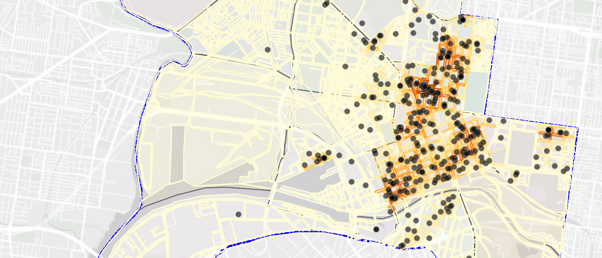

Spatial Bros
Note: The Spatial Bros shiny web application may take up to 3 minutes to load fully, please wait patiently, thank you.
Background

The City of Melbourne has many datasets that are readily available to the public, through City of Melbourne Open Data and Data Vic. Yet, this only fufills the first part of ‘data access’ by providing datasets on their websites available for download and simple spatial points exploration using the interactive map provided.
Users who are not trained in geospatial analysis or GIS are unable to perform their own analysis to understand spatial pattern or trends behind their neighbourhood which could help citizens or outsiders to understand the city better and possibly formulate citizen efforts.
These are important pointers as the true democratisation of data should allow users to be empowered with tools to comfortably analyse datasets with ease and come up with their analysis and conclusions.
About the Project

Network Constrained Spatial Point Pattern Analysis of Accomodation in City of Melbourne by Road Network
The Spatial Bros is created to fufill the next step of data democratisation to assist non-technical savvy users in performing geographical point pattern analysis to gain insights from open data. Our application will assist users with 2 kinds of analysis as shown:
Spatial Points Analysis
Network Constrained Spatial Point
Network Constrained Kernel Density Map
Network Constrained G/K Statistical Functions
1st/2nd Order Spatial Point Pattern Analysis
Kernel Density Map
1st Order Clarks and Evans Test
2nd Order G/K Statistical Functions
For each of the analyses, the application will provide users with kernel density maps and perform types of hypothesis testing to allow users to generate insights towards statistical conclusions on the distribution of spatial points along networks.
Users can look forward to a simple-to-use interface, with clear instructions to understand the functionality of each feature, explanations of each option and instructions on interpreting the output data to come up with their conclusions.
Fun Areas to Explore
Here are some locations of interest you can explore and analyse to get started!
Drinking Fountains
Business Establishments > Vacant Space
Public Toilets
Business Establishments > Accomodation
Business Establishments > Convenience Store
Contents
Special Thanks
This project is done for IS415 Geospatial Analytics & Application under the guidance of Professor Kam Tin Seong.